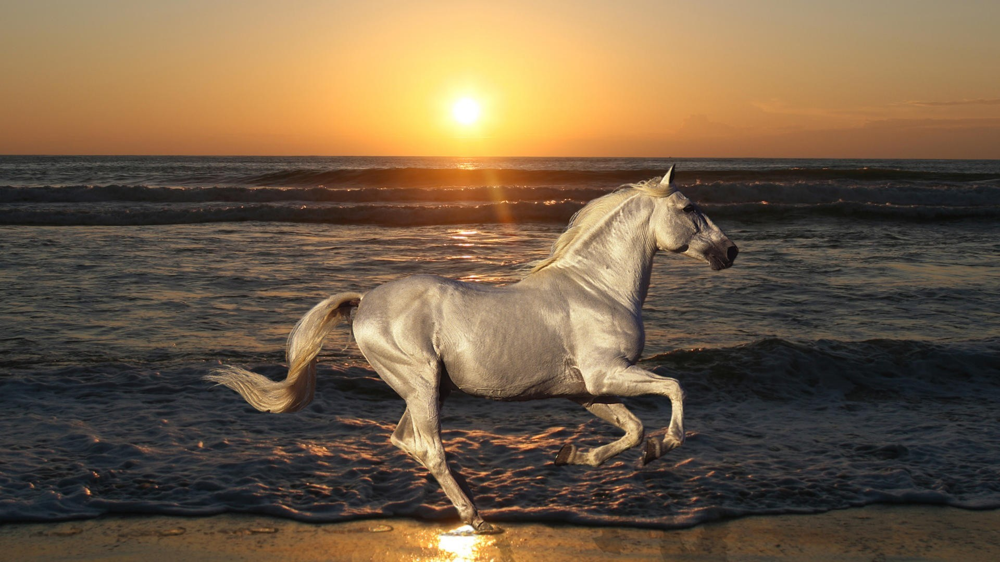
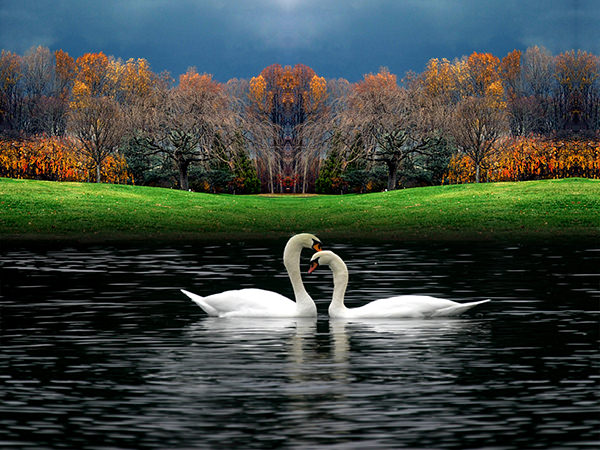

“In photography there is a reality so subtle that it becomes more real than reality.”

“Photograph: a picture painted by the sun without instruction in art.”

“There is one thing the photograph must contain, the humanity of the moment.”
“If you see something that moves you, and then snap it, you keep a moment.”

I believe a leaf of grass is no less than the journey-work of the stars.

Swan symbolism is also linked to inner beauty and self love. A pair of swans represent soul mates for life.